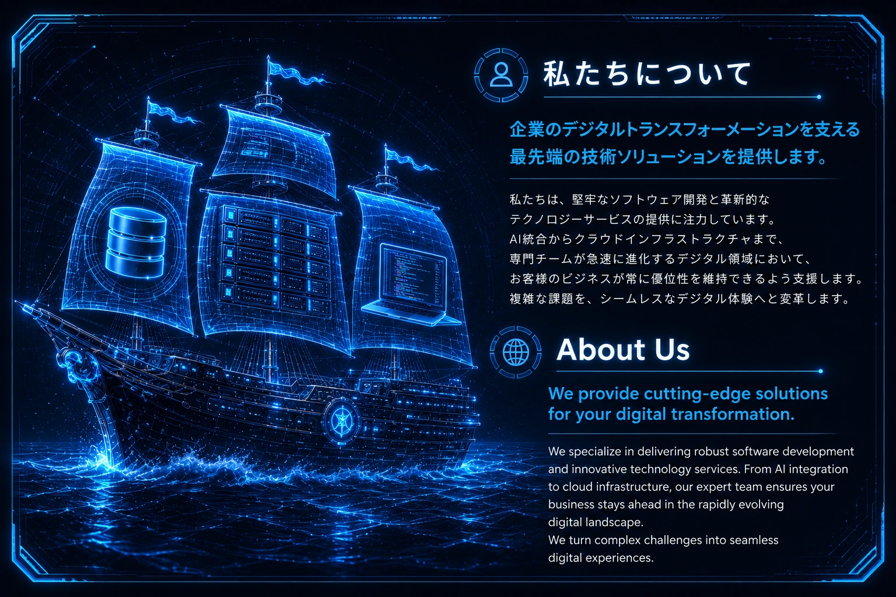

2026年第1四半期、我々のチームはモジュール性とシステム安定性に焦点を当てた包括的なインフラ刷新を完遂した。レガシーなモノリシック構成から切り離されたアーキテクチャへ移行することで、ゼロダウンタイムかつデータ整合性100％のデプロイメントを実現し、拡張性の高いエンジニアリング運用における新たな基準を確立した。
オーケストレーションの力：AI駆動による精密さ
我々のエンジニアリングは、システムパフォーマンスを管理するために高度なAIデータオーケストレーションを活用している。予測トラフィック分析を通じて、ミリ秒単位でデプロイメントウィンドウを最適化し、効率を最大化する。更新の適用前に、自動ヘルスチェックノードとロードバランサーが潜在的なボトルネックを排除し、すべてのサービスが完璧に同期され、自己安定化する環境を保証する。
アーキテクチャの整合性：アンチパターンの克服
伝統的なモノリシック開発を、システム的な不安定さを招く「アンチパターン」と定義している。我々の哲学は「コンポーネントを一つも置き去りにしない」という指針に根ざしており、すべてのマイクロサービスに対して堅牢なフェイルオーバー戦略を組み込んでいる。技術的負債を根本から解決し、不安定な機能の乱立よりも長期的な保守性とアーキテクチャの完全性を優先する。
システム進化：「スパゲッティコード」から「アルゴリズムによる確実性」へ
過去の「スパゲッティコードの泥沼」を脱し、現代的なアーキテクチャではクリーンな「リクエスト→サービス→リポジトリ」フローを採用している。手動による混沌としたプロセスをモジュール化された自動実行に置き換え、各層を分離することで技術的負債を最小化し、複雑な移行作業を決定論的で予測可能なデジタル体験へと昇華させた。
結論：拡張可能なインフラの未来
現代のエンジニアリングは希望や手動のホットフィックスではなく、工業用レベルの精密なデータに基づいている。デジタル環境を洗練させ続ける我々は、開発が英雄的なコーディングではなく、アーキテクチャの抽象化、厳格な監視、そしてアルゴリズムによる確実性によって定義される時代へと歩を進めている。